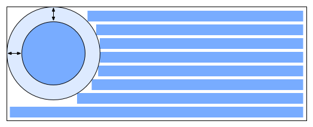

Abstract
CSS Shapes control the geometric shapes used
for wrapping inline flow content outside an element.
For Level 1, CSS Shapes can be applied to floats.
A circle shape on a float will cause inline content
to wrap around the circle shape
instead of the float's bounding box.
Future levels of CSS Shapes will allow use of shapes
on elements other than floats
Status of this document
Table of contents
Introduction
This section is not normative.
This specification defines properties to control the geometry of
an element's float area.
Definitions
Float area
The area used for wrapping content around a float element. By default, the
float area is the float element's
margin box.
This specification's
'shape-outside' property can be used to define arbitrary, non-rectangular float
areas.
Shapes
Issue-16716
Handling visible content as a shape for Exclusions
Shapes define arbitrary geometric contours around which inline
content flows. The shape-outside property defines the float area for a float.
If a user agent implements both CSS Shapes and CSS Exclusions,
the shape-outside property defines
the exclusion area for an exclusion.
A future level of CSS Shapes will define a shape-inside property,
which will define a shape to wrap content within the element.
Relation to the box model and float behavior
While the boundaries used
for wrapping inline flow content
outside an float
can be defined using shapes,
the actual box model does not change.
If the element has specified
margins, borders or paddings
they will be computed and rendered
according to the [[!CSS3BOX]] module.
Float positioning is an exception.
If a float has an outside shape,
its positioning is resolved as
defined
in [[!CSS21]]
but the outside shape's bounding box
is used in lieu of the float's margin box.
In the following example
the left and right floating
div elements
specify a triangular shape
using the 'shape-outside' property.
<div style="text-align:center;">
<div id="float-left"></div>
<div id="float-right"></div>
<div>
Sometimes a web page's text content appears to be
funneling your attention towards a spot on the page
to drive you to follow a particular link. Sometimes
you don't notice.
</div>
</div>
<style type="text/css">
#float-left {
shape-outside: polygon(0,0 100%,100% 0,100%);
float: left;
width: 40%;
height: 12ex;
}
#float-right {
shape-outside: polygon(100%,0 100%,100% 0,100%);
float: right;
width: 40%;
height: 12ex;
}
</style>
</div>
Basic Shapes
Shapes can be specified using
syntax similar to SVG's basic shapes.
The definitions use
<length> type
and the <percentage> types (see [[!CSS3VAL]]).
Percentages are resolved
from the computed value of the
'box-sizing'
property [[!CSS3UI]]
on the element to which the property applies.
For the radius r of the circle shape,
a percentage value is resolved as
specified
in the SVG recommendation (see [[!SVG11]]).
Path styling like stroking is not considered part of the specified shape.
Supported Shapes
The following basic shapes are supported.
- rectangle([<length>|<percentage>]{4} [ curve [<length>|<percentage>]{1,2} ]? )
-
-
The four values represent
x, y, width and
height.
They define the bounding box
of the rectangle.
Negative values for width and height are invalid.
-
The two 'curve' values represent
rx and ry.
For rounded rectangles they define
the x-axis radius and y-axis radius
of the ellipse used to round off
the corners of the rectangle.
Negative values for rx and ry are invalid.
Implicit values may apply if one or the other
of these values are unspecified or invalid,
and clamping may occur if a specified value
would result in a negative straight rectangle segment.
The corner radii rules in the 'rect' element
in the SVG recommendation define these edge cases [[!SVG11]].
- inset-rectangle([<length>|<percentage>]{4} [ curve [<length>|<percentage>]{1,2} ]? )
-
-
The four values represent the
top, right, bottom and
left insets that
define the bounding box
of the inset rectangle.
Negative values for any of these insets are invalid.
-
The two 'curve' values represent
rx and ry.
For rounded inset rectangles they define
the x-axis radius and y-axis radius
of the ellipse used to round off
the corners of the inset rectangle.
Negative values for rx and ry are invalid.
Implicit values may apply if one or the other
of these values are unspecified or invalid,
and clamping may occur if a specified value
would result in a negative straight rectangle segment.
The corner radii rules in the 'rect' element
in the SVG recommendation define these edge cases [[!SVG11]].
- circle([<length>|<percentage>]{3})
-
-
The three values values represent
cx,
cy,
and r.
They define the x-axis and y-axis coordinates
of the center of the circle
and the radius of the circle.
A negative value for r is invalid.
- ellipse([<length>|<percentage>]{4})
-
-
The four values represent
cx,
cy,
rx, and
ry.
They define the x-axis and y-axis coordinates
of the center of the ellipse
and the x-axis and y-axis radius
of the ellipse.
Negative values for rx and ry are invalid.
- polygon([<fill-rule>,]? [<length>|<percentage>]{2}#)
-
- fill-rule - The filling rule used to determine the interior of the
polygon. See fill-rule property in SVG for details. Possible values are nonzero
or evenodd. Default value when omitted is nonzero.
-
The two length values represent xi and yi -
the x and y axis coordinates of the i-th vertex of the polygon.
The UA will close a polygon
by connecting the last vertex
with the first vertex of the list.
Interpolation of Basic Shapes
For interpolating between
one basic shape and a second,
the rules described below are applied.
- If both basic shapes are of the same type and not of type polygon:
- Interpolate between each value.
- If one basic shape is of type rectangle and the second of type circle or ellipse:
- Replace the circle/ellipse with a temporary rectangle of equal dimension.
- Set the values for rx and ry on the temporary rectangle to ‘50%’.
- Interpolate between the two rectangles as above.
- If one basic shape is an inset-rectangle and the second is of type rectangle, circle or ellipse:
- Replace the inset-rectangle with a temporary rectangle of equal dimension.
- Interpolate between the basic shapes as above.
- If both basic shapes are of type polygon and if both polygons have the same number of vertices:
- Interpolate between each value.
- In all other cases:
- No interpolation is specified.
Shapes from Image
Issue-16112
Address security concern with automatic shape extractions for images
Another way of defining shapes
is by specifying a source image
whose alpha channel is used
to compute the shape.
The shape is computed to be the path
that encloses the area
where the opacity of the specified image
is greater than the 'shape-image-threshold' value.
If the 'shape-image-threshold' is not specified,
the initial value to be considered is 0.5.
For animated raster image formats
(such as GIF),
the first frame of the animation sequence is used.
An image is floating to the left of a paragraph. The image shows the 3D version of the
CSS logo over a transparent background. The logo has a shadow using an alpha-channel.
The image defines its float area through the 'shape-outside' property and
specifies a value of 35 pixels for the 'shape-margin' property.
<p>
<img id="CSSlogo" src="CSS-logo1s.png"/>
blah blah blah blah...
</p>
<style>
#CSSlogo {
float: left;
shape-outside: url("CSS-logo1s.png");
shape-image-threshold: 0.1;
shape-margin: 35px;
}
</style>
The image needs two references to the image because this example uses the same image
- to render it
- as a shape defining the float area of the image
It is perfectly possible to display an image and use a different image for its
float area.
In the figure below, the alpha-channel threshold is represented by the dotted line around
the CSS logo and the 35px shape-margin is visible between that line and the edges of
each individual line of the paragraph.
It's then possible to affect where the lines of the paragraph start in three ways:
- Changing the value of the 'shape-margin' property
- Changing the value of the 'shape-image-threshold' property
- Modifying the alpha channel in the image
Declaring Shapes
Shapes are declared with
the 'shape-outside' property,
with possible modifications
from the 'shape-margin' property.
The shape defined by
the 'shape-outside'
and 'shape-margin' properties
changes the geometry
of a float element's
float area.
The 'shape-outside' Property
| Name: |
shape-outside |
| Value: |
auto | <basic-shape> | <uri> |
| Initial: |
auto |
| Applies to: |
floats |
| Inherited: |
no |
| Percentages: |
N/A |
| Media: |
visual |
| Computed value: |
computed lengths for <basic-shape>, the absolute URI for <uri>, otherwise as specified |
The values of this property have the following meanings:
- auto
- The float area uses the margin box as normal.
- <basic-shape>
-
The shape is computed based on the values of one of 'rectangle', 'inset-rectangle', 'circle', 'ellipse'
or 'polygon'.
- <uri>
-
If the <uri> references an image, the shape is extracted and computed
based on the alpha channel of the specified image.
If the <uri> does not reference an image, the
effect is as if the value 'auto' had been specified.
The 'shape-image-threshold' Property
The 'shape-image-threshold' defines the alpha channel threshold used to extract
the shape using an image. A value of 0.5 means that all the pixels that are more
than 50% transparent define the path of the shape.
| Name: |
shape-image-threshold |
| Value: |
<alphavalue> |
| Initial: |
0.5 |
| Applies to: |
floats |
| Inherited: |
no |
| Percentages: |
alpha channel of the image specified by <uri> |
| Media: |
visual |
| Computed value: |
The same as the specified value after clipping the <alphavalue> to the range [0.0,1.0]. |
The values of this property have the following meanings:
- <alphavalue>
-
A <number> value used to set the threshold used for extracting a shape from
an image. Any values outside the range 0.0 (fully transparent) to 1.0 (fully opaque)
will be clamped to this range.
The 'shape-margin' property
The 'shape-margin' property adds a margin to a shape-outside.
This defines a new shape where every point
is the specified distance from the shape-outside.
This property takes on positive values only.
| Name: |
shape-margin |
| Value: |
<length> |
| Initial: |
0 |
| Applies to: |
floats |
| Inherited: |
no |
| Percentages: |
N/A |
| Media: |
visual |
| Computed value: |
the absolute length |
A 'shape-margin' creating an offset
from a circlular shape-outside.
The blue rectangles represent
inline content affected
by the shape created
by the margin.

Acknowledgments
This specification is made possible by input from
Andrei Bucur,
Alexandru Chiculita,
Arron Eicholz,
Daniel Glazman,
Arno Gourdol,
Zoltan Horvath,
Chris Jones,
Bem Jones-Bey,
Marcus Mielke,
Alex Mogilevsky,
Hans Muller,
Mihnea Ovidenie,
Virgil Palanciuc,
Dirk Schulze,
Peter Sorotokin,
Bear Travis,
Eugene Veselov,
Stephen Zilles
and the CSS Working Group members.
References
Normative references
Other references
Index
Property index
Change Log
- Postpone shapes from SVG to a future Shapes level
- Postpone shape-inside to a future Shapes level
- split exclusions from shapes into separate modules
- added inset-rectangle() to basic shapes
- Changed shape-inside overflow diagrams to show exclusion behavior
- Changed shape-inside to contribute to the wrapping context
- Defined exclusion edges relative to wrapping content's writing mode
- Made use of start, end, before and after consistent
- Added interpolation for basic shapes
- Changed basic shapes to depend on box specified with box-sizing
- Added overflow behavior for shape-inside.
- Added wrap-flow:minimum.
- Clarified processing model.
- Changed wrap-margin and wrap-padding to shape-margin and shape-padding.
- Removed wrap shorthand.
- Clarified processing model.
- Clarified interaction with floats.
- Clarified that an exclusion element establishes a new block formatting context.